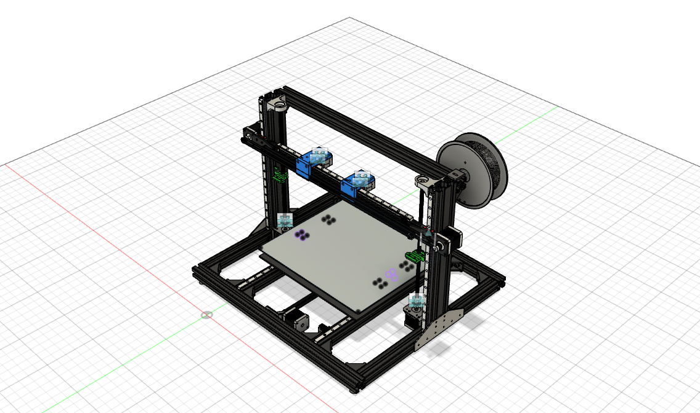
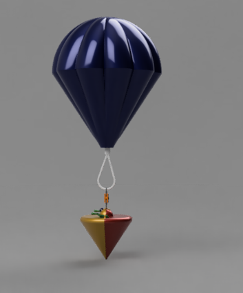
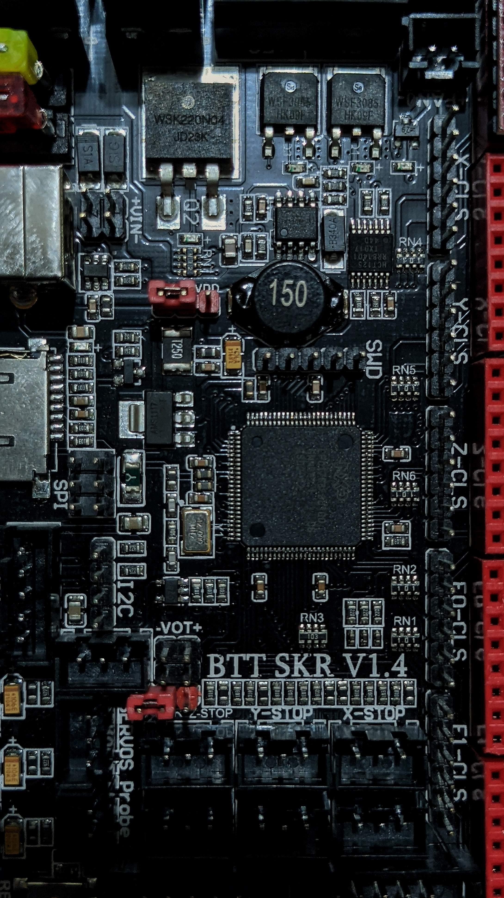
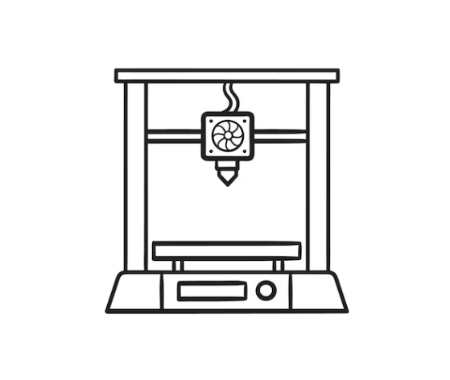

| Kinematic Architecture | Independent Dual Extruder (IDEX) X-axis with dual independent stepper carriages on precision linear guide rails |
|---|---|
| Usable Build Envelope | 350 mm × 300 mm × 400 mm (X × Y × Z) |
| Operational Modes | Multi-Material / Multi-Color, Soluble Support (PVA/BVOH), Synchronous Mirror Mode, and Synchronous Duplication Mode (2× output) |
| Thermal Capabilities | All-metal bi-metallic heatbreak rated to 350°C; 220V 800W cast aluminum heated bed rated to 130°C |
| Material Versatility | PLA, PETG, ABS, ASA, TPU (85A–98A flexible), Nylon (PA12), and Carbon-Fiber reinforced polymers (PA-CF, PETG-CF) |
| Positional Repeatability | X/Y Axis: ±15 microns via MGN12H linear guides; Z Axis: ±5 microns via dual synchronized lead screws |
| Nozzle Parking & Ooze Control | Active mechanical parking docks with spring-loaded brass brush wipes and silicone anti-ooze seal cups |
| Engineering Tools | SolidWorks (Parametric Assemblies & Interference Detection), Autodesk Fusion 360, ANSYS FEA, Klipper Firmware |
Kinematic Assemblies & Hardware Prototypes




1. The Rationale for Independent Dual Extrusion
Conventional dual-extrusion printers mount two hotends on a single carriage. This introduces significant parasitic mass, nozzle oozing, cross-contamination, and reduces print speeds. The IDEX design separates the toolheads onto two distinct X-axis motor loops. While Toolhead 0 prints, Toolhead 1 parks outside the build volume over a silicone wiping station, eliminating stringing and oozing entirely.
2. Gantry Rigidity & High-Speed Kinematics
To maintain micro-step positional accuracy at accelerations exceeding 5,000 mm/s², the main X-gantry was engineered using a custom-extruded aluminum profile with internal cross-ribbing. FEA simulations under dynamic carriage inertia verified that gantry beam deflection remained below 12 microns during aggressive direction reversals.
3. Commercial Product Development at 3D PrintzKart
During my tenure as Product Development Engineer at 3D PrintzKart, this system architecture served as a foundational platform for delivering high-tolerance functional parts, custom jigs, fixtures, and end-use housings for industrial clients requiring heat-resistant and composite polymers.